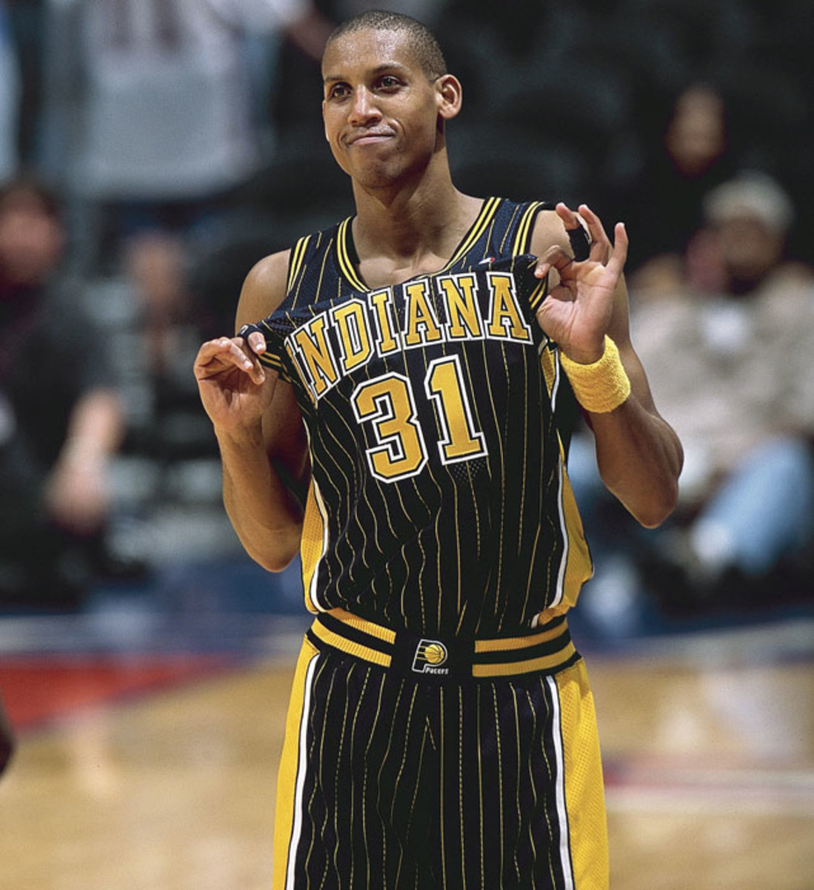

Indiana Pacers — АҚШ-тың Индиана штатындағы Индианаполис қаласында орналасқан кәсіби баскетбол командасы. Олар NBA-ның Шығыс конференциясының Орталық дивизионында ойнайды. Команда 1967 жылы құрылған және бастапқыда ABA лигасында өнер көрсетіп, сол жерде үлкен жетістіктерге жеткен. Pacers ABA тарихындағы ең табысты клубтардың бірі болып, 3 рет чемпион атанды (1970, 1972, 1973). 1976 жылы ABA–NBA бірігуінен кейін Indiana Pacers NBA құрамына қосылды. Өз ойындарын Pacers Gainbridge Fieldhouse аренасында өткізеді.
NBA-ға өткеннен кейін Pacers ұзақ уақыт бойы тұрақты, тәртіпті және командалық ойын стилімен танылды. 1990–2000 жылдары клубтың ең жарқын кезеңі болды. Бұл дәуірді жұлдыз ойыншы Реджи Миллер басқарды. Pacers бірнеше маусым бойы шыңға жақын болды және 2000 жылы NBA финалына дейін жетті. Команда осы жылдары агрессивті қорғанысымен, дәл лақтыруымен және жанкүйерлердің ерекше қолдауымен әйгілі болды.
Қазіргі уақытта Pacers жаңа жұлдыз — Тайриз Халлибёртон келгеннен кейін қайта жанданып келеді. Ол команданың ойынын жылдам, тиімді және қызық стильге ауыстырды. Indiana Pacers бүгінде NBA-дағы ең жас әрі болашағы өте жарқын ұжымдардың бірі саналады.

Реджи Миллер — Indiana Pacers тарихындағы ең үздік ойыншы. Ол өзінің керемет үштік лақтыру дәлдігімен, шешуші секундтарда батыл ойнымен және мінезімен танылған. Миллер Pacers-ті NBA финалына жеткізген, клуб тарихындағы ең көп ұпай жинаған ойыншы болып қала береді. Оның №31 жейдесі клубтан мәңгілікке retirada етілген.